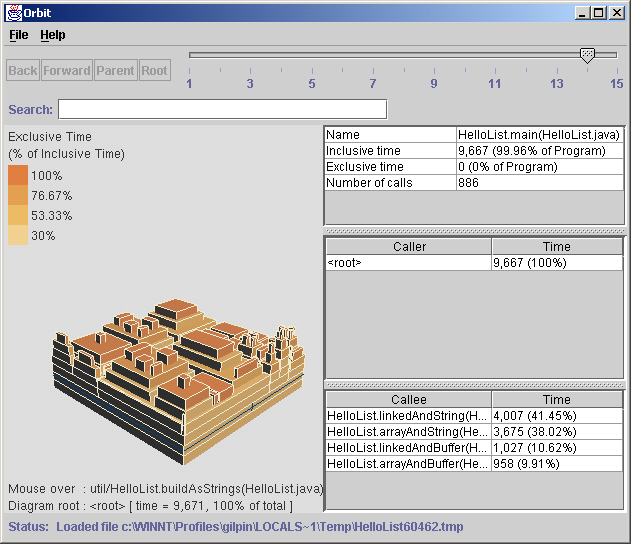

prophIt Overview
prophIt is an innovative visualization tool for working with Java profiles. Generate profile data using your standard java profiling options, and watch the data come to life when you visualize your application's performance with prophIt. We believe that prophIt can help you quickly find the hotspots in your application and make sense of an otherwise laborious set of profile data.

prophIt's life began when we realized that looking at profile data was really tedious. The applications we were using to examine our java applications' CPU performance suffered from deficiencies such as:This is just a short list. If you can think of even more compelling shortcomings in the profiling products you work with, we'd like to hear about them, so email us.
- Most of the screen real estate is taken up by text, when in fact the numeric timing data is the most critical information.
- The performance of recursive methods/functions is difficult to assess.
- It can be difficult to figure out which level of the call graph is really eating up all the time.
- Complex programs tend to have complex call graphs and profile data which makes it difficult to really understand from a top-down perspective.
- A method or function might get called in several places within an application. In traditional profile data viewers, it is difficult to aggregate this performance information.
- In a complex program, profilers do not provide a good way to constrain the context to just the parts of the data that are interesting to the developer.
- Most importantly, we have found that developers tend to draw incorrect conclusions based on their profile data -- often precisely because of the limitations of visualizing that data effectively.
We believe that prophIt begins to address these problems. Its functionality is still growing and evolving, but we think you'll find it is already a valuable aid in identifying the hotspots in your Java applications. The difference starts with the tower diagram, which let's you visualize the time performance of functions as 3D colored blocks that present a wealth of information. Just some of the features included are:Here are a few links that provide some more information on profiling Java applications. The first two links show what is currently state of the art in terms of profile data for java applications. The third link should help explain why we think there is room for improvement in the visual display and understanding of profiling data.We think if you try prophIt you'll find it a valuable tool. Either way, let us know what you think by giving us feedback on the site, the product, or the profiling problem in general. If prophIt doesn't meet your needs, tell us what would.
- Color-coding of the call graph shows you visually which calls are consuming the greatest percentage of the time allocated to them.
- Manage the complexity by cutting off the depth of the call-graph using the tower diagram.
- Manage the complexity by establishing a particular function call as your reference or starting point for examining performance.
- Increase or decrease the depth of the call graph and watch the story of your application's performance grow before your eyes.
- Select a function that is called from multiple parent functions. View the aggregate data, and observe physically where each is called in tower diagram.
- Because you can examine the data from all angles, you are more likely to get the correct logical view of your application's performance, and more likely to solve your CPU performance bottlenecks.
- Search for the particular function you are interested, and observe how it fits into the overall performance picture in the tower diagram.
- Check out
hprofresources - Check out
java -profresources - Read The Visual Display of Quantitative Information. It's a very thought-provoking read that will have you looking at diagrams, maps, and all forms of graphical information display in new ways.